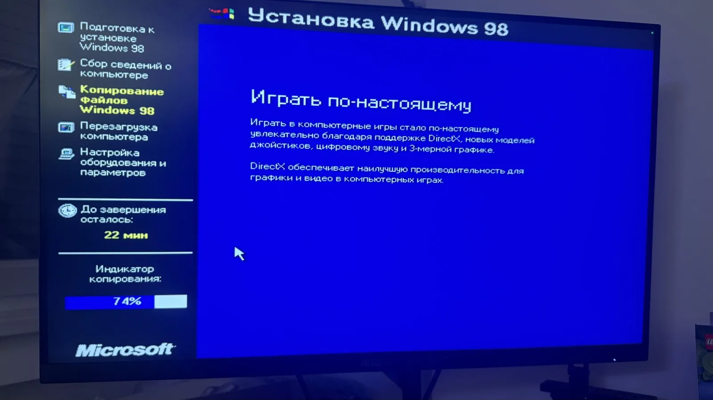

Попердолился с Windows 98 и XP на тонком клиенте HP t610 ещё несколько месяцев назад, а руки описать всё никак не доходили. Накатал
статейку о своих мытарствах. Больше половины, конечно, уже забыл. Есть шутка, что на Linux играют не ради самих игр, а ради пердолинга с их запуском, — вот тут примерно так же.

Комментарии